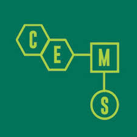

WA3PPJ's Ham House
Radio News, Data & Captures


This site is a general hub for whatever radio stuff I can get my hands on — SDRs, old transceivers, satellite data, and HF catches. I'll keep building it out over time. Feel free to look around. 73 de WA3PPJ.


This site is a general hub for whatever radio stuff I can get my hands on. I plan to add sections covering SDRs, old transceivers, satellite data, and HF during breaks. I'll keep building over the next few years. As of now it's my online SDR log — feel free to look around. 07.
| Item | Details |
|---|---|
| Callsign | WA3PPJ |
| Location | Maryland, USA |
| Primary SDR | RTL-SDR v3 + upconverters |
| Antennas | Wire antennas, mag loop, discone |
| Interests | SDR, satellite, HF, old iron, data modes |
| Date | Frequency | Mode | Notes |
|---|---|---|---|
| 2025-04-10 | 14.225 MHz | SSB | Strong EU DX contact |
| 2025-04-09 | 137.1 MHz | APT | NOAA-19 pass, clean signal |
| 2025-04-07 | 7.074 MHz | FT8 | Multiple contacts logged |
This section covers the transceivers in the shack — vintage and modern. Add a panel per rig with description, photos, and restoration notes.
Describe the rig: year, manufacturer, bands, modifications, restoration history. Add an image below.
Description for your second transceiver goes here.
Decoded satellite imagery and pass reports. Add your NOAA APT images, SSTV frames, and pass notes below.
Replace this block with your SDR stream embed.
Options: OpenWebRX iframe, KiwiSDR embed, or a WebSocket player.
Replace the placeholder above with an embed from your SDR server (OpenWebRX or KiwiSDR). You'll need a public IP or reverse proxy to expose a local server. Add connection instructions here once the stream is live.